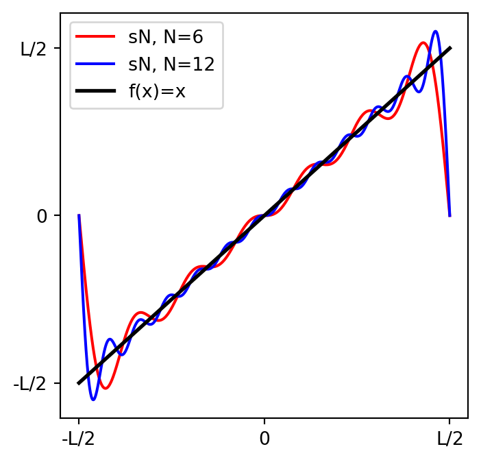
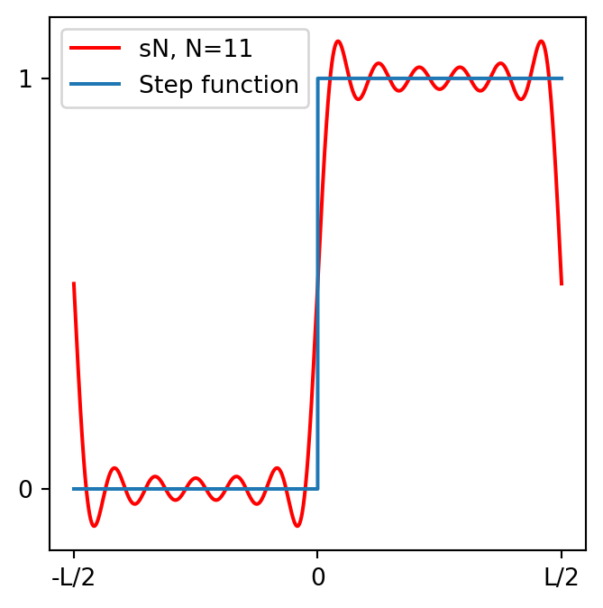

El objetivo de la presente sección es generar una intuición de la siguiente afirmación: > La red recíproca es la transformada de Fourier de la red real.
7.1 Serie de Fourier
Serie de Fourier (real)
Una función periódica, \(f(x)\), en el intervalor \([-L/2,L/2]\) puede escribirse como la serie (una serie es una suma infinita de terminos),
\[
f(x) = x\quad \text{en el intervalo} \quad [-L/2,L/2]
\]
Code
from pylab import*a =-10.0b =10.0N =6L = b-a# Tomar 100 puntos entre a y b, y los guarda# en la variable xx = linspace(a,b,1000)f = x# Coeficientes de Fouriera_0 =2.0/L*trapz(f,x)# Con el fin de realizar la integral utilizamos# la función trapz( ). tapz realiza la integral # numérica aporximando el área bajo la curva # por trapecios.# SF: Suma de FourierSF = zeros_like(x) SF += a_0/2.0for n inrange(1,N+1): a_n =2.0/L*trapz( f*cos(2*n*pi/L*x),x) b_n =2.0/L*trapz( f*sin(2*n*pi/L*x),x) SF += a_n*cos(2*n*pi/L*x)+b_n*sin(2*n*pi/L*x)# SF2: Suma de FourierSF2 = zeros_like(x) SF2 += a_0/2.0for n inrange(1,2*N+1): a_n =2.0/L*trapz( f*cos(2*n*pi/L*x),x) b_n =2.0/L*trapz( f*sin(2*n*pi/L*x),x) SF2 += a_n*cos(2*n*pi/L*x)+b_n*sin(2*n*pi/L*x)fig,ax = plt.subplots(figsize=(4,4)) ax.plot(x,SF,color='r',label=f"sN, N={N}")ax.plot(x,SF2,color='b',label=f"sN, N={2*N}")ax.plot(x,f,ls='-',lw=2, color='k',label='f(x)=x')ax.set_xticks([-L/2,0,L/2])ax.set_yticks([-L/2,0,L/2])ax.set_xticklabels(["-L/2","0","L/2"])ax.set_yticklabels(["-L/2","0","L/2"])ax.legend()plt.show();

7.1.2 Ejemplo: función escalón
Code
from scipy import integratefrom matplotlib import pyplot as pltimport numpy as npa =-10.0b =10.0N =11T=b-ax=np.linspace(-10,10,10000)f = piecewise(x,x>=0,[1,0])a_0 =2.0/T*integrate.quad(lambda x: np.piecewise(x,x>=0,[1,0]),a,b)[0]y = a_0/2.0*x**0.0# Coeficientes de Fouriera_0 =2.0/L*trapz(f,x)# SF: Suma de FourierSF = zeros_like(x) SF += a_0/2.0for n inrange(1,N+1): a_n =2.0/L*trapz( f*cos(2*n*pi/L*x),x) b_n =2.0/L*trapz( f*sin(2*n*pi/L*x),x) SF = SF + a_n*cos(2*n*pi/L*x)+b_n*sin(2*n*pi/L*x)fig,ax = plt.subplots(figsize=(4,4))ax.plot(x,SF,color='r',label=f"sN, N={N}")ax.plot(x,f,label="Step function")ax.set_xticks([-L/2,0,L/2])ax.set_yticks([0,1])ax.set_xticklabels(["-L/2","0","L/2"])ax.legend()plt.show();

Serie de Fourier (compleja)
Una función periódica, \(f(x)\), en el intervalor \([-L/2,L/2]\) puede escribirse como la serie (una serie es una suma infinita de terminos),